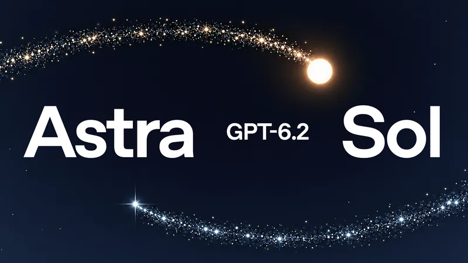

国际重点热门OpenAI 发布 GPT-6.2 Astra 与 GPT-6.2 Sol
Introducing GPT-6.2 Astra and Sol
OpenAI 发布面向高难度专业项目的前沿模型 GPT-6.2 Astra，以及适合日常工作的高效模型 GPT-6.2 Sol。Astra 在 Agents’ Last Exam 上比 GPT-6 Astra 高 5.2 分且成本不到三分之一，API 输入与输出价格低 20%；Sol 保持 GPT-6.1 Sol 的 API 价格，在 Cognition FrontierCode 2.0 上接近 Astra，成本约五分之一
OpenAI 官网 · 11-18 01:45
看原文